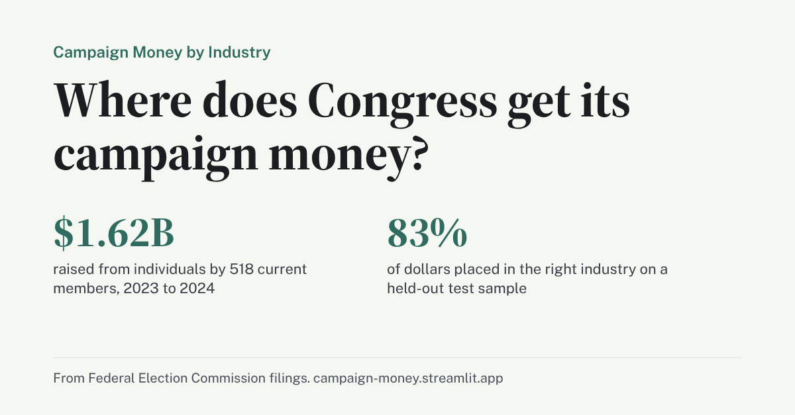

Where does Congress get its campaign money? Donations members of Congress raise from individuals, sorted by the industry each donor works in, from Federal Election Commission filings for 2022 and 2024.
Open Campaign MoneyCode on GitHubFree hosting puts the app to sleep when it is quiet. If you see a wake-up screen, it is back in about 30 seconds.